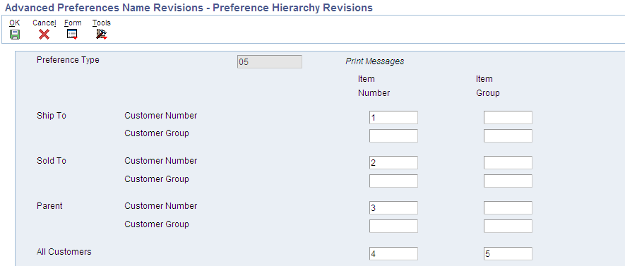
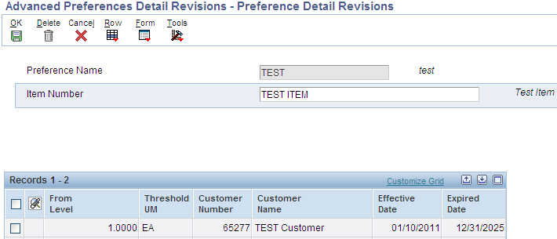
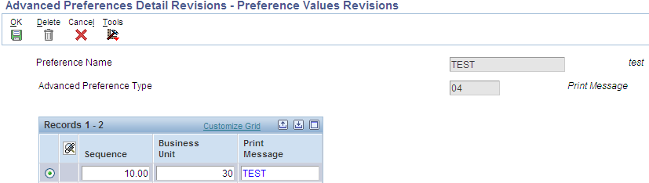
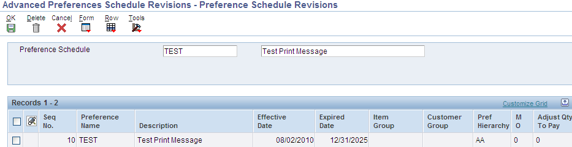
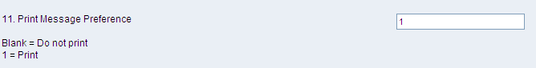

The Print Message preference allows additional Print Messages to be specified based on the Item Number, the Item Group, or a combination of Item Number, Item Group and Customer, Customer Group. A print message can be specified on the order header, the order detail, and/or in the processing options of the individual print program.
Programs Affected: Print Message preferences work with the following distribution UBEs:
R42520 - Print Pick Slips
R42565 - Invoice Print
The system will search for ALL eligible Print Messages that apply for a given order based on the preference hierarchy. It will print the message for every hit in the hierarchy (sometimes causing the same message to print multiple times). Print Messages can be entered by branch/plant for each level of the hierarchy. If the same Print Message applies to all branch/plants for a given hierarchy, leave the branch/plant field blank on the Print Message Revision screen. Print Message setup determines which document types on which the preference Print Messages are to print.
Print Messages must be defined at the detail (item) level rather than the header (customer) level. For example, a user cannot enter a print message for a customer across all items, but it is possible to enter a print message on item across all customers or for a specific Item/Customer combination. The Preference Hierarchy (P40073) screen is input inhibited for invalid combinations, when the correct preference hierarchy is selected. For print messages, Preference Hierarchy Type 05 should be used.
Print Messages Preference is not added to Sales Order Detail (F4211) table, there is no need to set up or attach a version of Preference Selection (R40400) to Sales Order Entry (P4210) program.
Scope
This document details the functionality of Print Messages Preference Profiles.
Details
Setup for Print Messages Preference
Setup UDC 40/PM-Print Messages code.
Go to menu G4241 to Work with Print Message (P40162). Setup the Print Message code with Text Attachment; this is the message to print.
From menu G40311 go to Advanced Preferences Name (P4071) to setup Advanced Preference Type print message, and Preference Hierarchy 05. It's very important to use this Preference Hierarchy, as it does not allow for incorrect hierarchy selections.
Example of Print Message Hierarchy (P40073|W40073D)

Note: The Print Messages Preference Type hierarchy inhibits a user from setting up all items across a specific customer. Print messages can only be defined for the combinations as shown above.
Go to menu G40311 to Advanced Preferences Detail (P4072) to set up Customer/Item combination.

Row exit from Advanced Preference Detail Revisions (P4072|W4072A) to Preference Values Revisions and attached the Print Message Code.

Go to menu G40311 to Advanced Preferences Schedule (P4070) and setup with the Preference Name.

Attached the Advanced Preferences Schedule under System Constants (P41001) off menu G4141.
The Advanced Preferences Schedule can also be attached to processing option #3 on the Preference tab Override Schedule for Advance Preferences in Sales Order Entry (P4210).
Setup processing option #11 on the Display tab behind Print Pickslip (R42520) called Print Message Preference off menu G4211.

Setup processing option #19 on the Print tab behind Invoice Print (R42565) called Print Message Preference off menu G4211.
Resolution of Preference Print Message Value in F4211 during Sales Order Entry (P4210)
In Sales Order Entry (P4210), there are two ways to get a Print Message populated to the Sales Detail Line (F4211).
The user can directly enter the Print Message to be printed in the Sales Order Detail line.
Use Advanced Preferences to bring in the Print Message from the Advanced Preference schedule in the Sales Order processing option or from the System Constant.
To use Advanced Preferences the following processing options on the Preference tab must be set behind Sales Order Entry (P4210):
Preference Profile Processing:
When this processing option is set to 1, it will populate the Print Message (either from the preference schedule given in System constants or the schedule given for PO Override schedule for Advance Preferences in SOE) specified to the Sales Order Detail line.
Override schedule for Advance Preferences:
If the user gives a schedule here and sets the PO Preference Profile Processing to 1, the print message defined in that schedule will get populated in Sales Order Detail line.
Logic Governing Printing of Print Message on Print Pick Slips (R42520) and Print Invoices (R42565)
This section describes what the output will be in both Print Pick Slips and Invoices, for various values of processing options in Sales Order Entry (P4210) (Preference Profile Processing and Override schedule for Advance Preferences) and R42520/R42565 (Override schedule for Advance Preferences).
According to the setup, the print message can be retrieved from two places: 1. From Sales Order Entry (P4210) Sales Detail line (F4211): If a print message is populated in Sales Order Detail (F4211) table Invoice Print (R42565) will always print that message. OR 2. Processing Option Setup in Print Pick Slips and Print Invoices:
If the processing option in Print Pick Slips or Invoice Print is turned on to use the print message advanced preference, the schedule is retrieved from the System Constants, evaluated and printed. This logic does not check for the processing options setup in Sales Order Entry (P4210). There is also no logic to check if a print message already exists in the Sales Order Detail (F4211) table and no check to determine if a duplicate print message will already be printing. So there is a potential to get the same message printed twice (refer to the test case 7 for the possible scenario to get printed the duplicate message). To prevent this from happening, make sure that the processing options are turned on for Print Messages only at Sales Order Entry (P4210), Pick Slip or Invoice Print.
Test Cases
The following table illustrates the output in Invoice Print (R42565) for various values given in processing options of Sales Order Entry (P4210) and Invoice Print (R42565):
Test Case
SETUP (INPUT)
OUTPUT
System Constants Setup
Sales Order Entry (P4210) Setup
Print Invoices (R42565) Setup
DB Update (Value Updated in F4211Record)
Print Message Printed in Invoice Print (R42565)
1. Schedule give in System Constants
2. Preference Profile Processing <BLANK>/1
3. Override Schedule for Advance Preferences
4. R42565 PO Print Message Preference <BLANK>/1
1. Value updated in SO Detail Line
2. Message printed from F4211
3. Message printed from System Constants
*1
ABC
<BLANK>
<BLANK>
<BLANK>
BLANK/ USER ENTRY VALUE
NONE/ USER ENTRY VALUE
NONE
2
ABC
<BLANK>
123
<BLANK>
BLANK/ USER ENTRY VALUE
NONE / USER ENTRY VALUE
NONE
*3
ABC
<BLANK>
<BLANK>
1
BLANK/ USER ENTRY VALUE
NONE / USER ENTRY VALUE
ABC
4
ABC
1
<BLANK>
<BLANK>
ABC
ABC
NONE
5
ABC
1
123
<BLANK>
123
123
NONE
*6
ABC
1
123
1
123
123
ABC
*7
ABC
1
<BLANK>
1
ABC
ABC
ABC
The seven columns describe the setup:
The first column refers to the Preference Schedule as set up in System Constants. In all the test cases given above, the schedule ABC has been populated in System Constants.
The second and third columns refer to the processing options in Sales Order Entry (P4210).
The fourth column refers to the processing option in Invoice Print (R42565) - Print Message Preference.
The fifth column tells us which print message gets resolved and populated into the Sales Order Detail line. This Print Message that appears in Sales Order Detail (F4211) table will always get printed when Invoice Print (R42565) is run.
The last two columns in the above table show the preference schedule(s) from which the print message gets printed when Invoice Print (R42565) is run on a sales order.
There are seven test cases provided and two preference schedules used here - ABC and XYZ. Four of the test cases (1, 3, 6 and 7) are explained in detail below.
Test Case 1:
The processing option in Sales Order Entry (P4210) is set to not activate preference processing and no override preference schedule is given. Thus no Print Message is populated in Sales Order Detail (F4211) table, unless the user manually enters a print message. Invoice Print (R42565) does not have the processing option to Print Message Preference set; hence the preference schedule in System Constants will not get retrieved. With this configuration the only way to get a print message to show in Invoice Print (R42565) is if the user manually enters one in Sales Order Detail line.
Test Case 3:
The processing option in Sales Order Entry (P4210) is set to not activate preference processing and no override preference schedule is given. Thus no Print Message is populated in Sales Order Detail (F4211) table, unless the user manually enters a print message. Invoice Print (R42565) has the processing option set to retrieve the Print Message Preference. With this configuration, the print message from the preference schedule given in System Constants (ABC) will get retrieved and printed in Invoice Print (R42565) along with any print message that the user manually entered one in Sales Order Detail line.
Test Case 6:
The processing option in Sales Order Entry (P4210) is set to activate preference processing and an override preference schedule 123 is given. Thus the Print Message from the schedule given in processing option (123) will get populated into the Sales Order Detail (F4211) and will be printed on the Invoice (R42565). Invoice Print (R42565) has the processing option set to retrieve the Print Message Preference, the print message from the preference schedule given in System Constants (ABC) will get retrieved and will also be printed in Invoice Print (R42565).
Test Case 7:
The processing option in Sales Order Entry (P4210) is set to activate preference processing and no override preference schedule is given. Thus the Print Message from the schedule given in System Constants (ABC) will get populated into the Sales Order Detail (F4211) and will be printed on the Invoice (R42565). Invoice Print (R42565) has the processing option to Print Message Preference is set to 1, the print message from the preference schedule given in System Constants (ABC) will get retrieved and will be printed in Invoice Print (R42565). Note: In this scenario, the print message from schedule ABC will get printed twice in Invoice Print (R42565). This can be avoided if the processing option in Invoice Print (R42565) to Print Message Preference is turned off.
Frequently Asked Questions
Question 1: Is there a way to get the print message from the "ship to" on the pick slip or invoice?
Answer 1: The Print Message is pulled in to the sales order header from the "Sold To" address book number. This is the default behavior designed into Sales Order Entry (P4210/P42101). You can override this using the Print Message Preference to use the "Ship To" address book number, but you cannot automatically pull in both messages into R42520 or R42565 output based on the "Sold To" and "Ship To" address on the F4201 order header or the F4211 Order Detail. Only one print message field is available in F4201 Sales Order Header and F4211 Sales Order Detail.
The workarounds for this issue include:
Specify the "Ship To" print message in the R42520 Global Print Message Processing Option (Display Tab Option 1) or R42565 Global Print Message Processing Option (Display Tab Option 15). This would require a separate version of R42520 or R42565 for each customer.
OR
Use Media Objects Line Attachments to attach additional messages to the order that would print in the Print Pickslip (R42520) based on the Print Detail Text Processing Option (Display tab Option 6). This would require entry of the additional message on an order by order basis. The database design only allows one print message to be stored per order header or order detail line. Media objects detail attachments have no such restriction.
Question 2: Can the Print Message Preference used in Print Pick Slips (R42520) also be used for Purchase Order Print (R43500)?
Answer 2: Per Bugs 10996368 and 10998002, this preference can only be used with Sales Orders. Functionality which is presently available in sales order report Print Pickslip (R42520) is not applicable for Print Purchase Order (R43500). As of now, neither functionality nor code is available in Print Purchase Order (R43500) to invoke the preference message as it is behaving in Print Pickslip (R42520). The functionality in Print Purchase Order (R43500) is such that, it will invoke the print message from F4311 (PDINMG) if print message is populated in purchase order detail (or) from table F4301 (PHINMG) if print message is populated in purchase order header. There is no functionality available in Print Purchase Order (R43500) which checks for the hierarchy and brings the print preference from P40305 settings. This is the same in all EnterpriseOne releases.